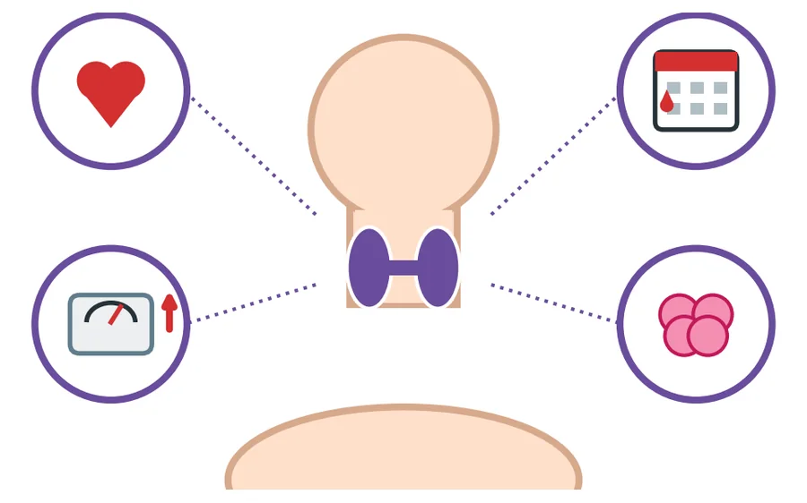
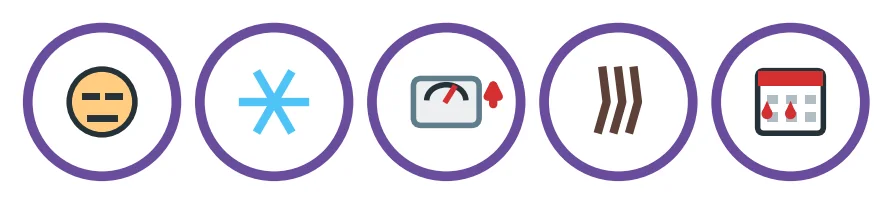
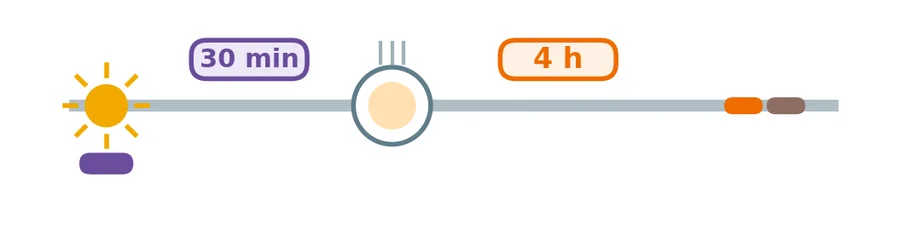
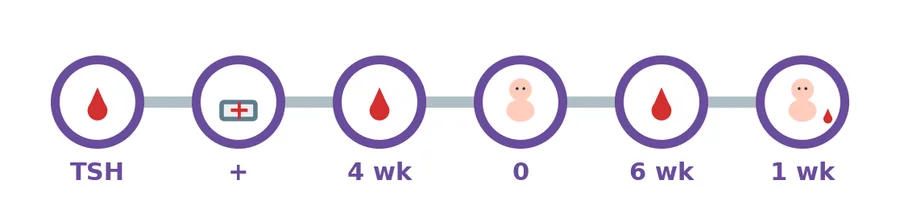
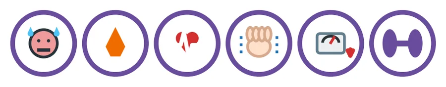
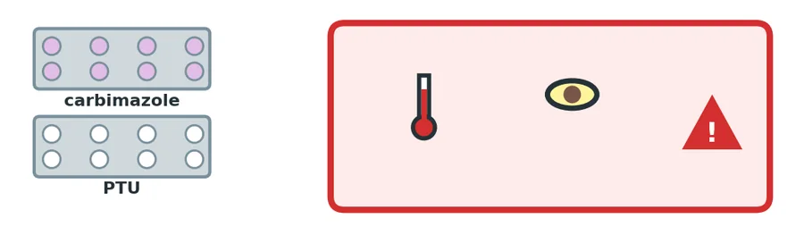
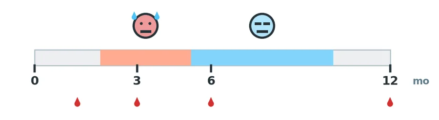
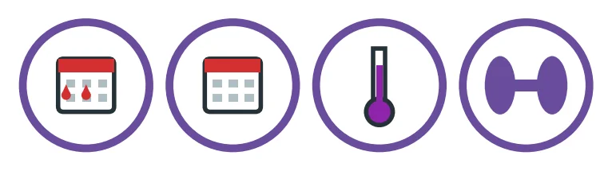
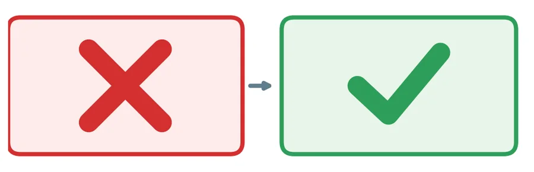

T-01All women
තයිරොයිඩ් ග්රන්ථිය යනු කුමක්ද? (සියලුදෙනා)
தைராய்டு என்றால் என்ன? (எல்லோரும்)
- බෙල්ලේ ඉදිරිපස ඇති කුඩා ග්රන්ථියකි.
- එය ශක්තිය, හදවතේ වේගය, බර, ඔසප් සහ මනෝභාවය සඳහා බලපාන තයිරොයිඩ් හෝමෝනය නිපදවයි.
- ගර්භණීභාවයේදී එය ඔබේ දරුවාගේ මොළයේ වර්ධනයටද අත්යවශ්යයි.
- ගැටලු දෙකකි: අඩුවෙන් ක්රියා කිරීම සහ වැඩියෙන් ක්රියා කිරීම.
- கழுத்தின் முன்புறத்தில் உள்ள சிறிய சுரப்பி.
- இது சக்தி, இதயத் துடிப்பு, எடை, மாதவிடாய், மனநிலை ஆகியவற்றுக்கான தைராய்டு ஹார்மோனை உற்பத்தி செய்கிறது.
- கர்ப்பத்தில் இது உங்கள் குழந்தையின் மூளை வளர்ச்சிக்கும் அவசியம்.
- இரண்டு பிரச்சினைகள்: குறைவாகச் சுரத்தல் மற்றும் அதிகமாகச் சுரத்தல்.

T-02All women
අඩුවෙන් ක්රියා කරන තයිරොයිඩ් (සියලුදෙනා)
குறைவாகச் சுரக்கும் தைராய்டு (எல்லோரும்)
- ලක්ෂණ: තෙහෙට්ටුව, සීතල දැනීම, බර වැඩිවීම, මලබද්ධය, වියළි සම, කෙස් ගැලවීම, පහත් මනෝභාවය, අධික හෝ අක්රමවත් ඔසප්.
- ගර්භණීභාවයේදී, ප්රතිකාර නොකළහොත්: ගබ්සාව, කල් නොපිරී උපත සහ දරුවාගේ මොළයේ දුර්වල වර්ධනය.
- ගර්භනී නොවන කාන්තාවන්ගේදී: ඔසප් සහ ගැබ් ගැනීමේ ගැටලු.
- ප්රතිකාර කිරීම පහසුයි.
- அறிகுறிகள்: சோர்வு, குளிர் உணர்வு, எடை கூடுதல், மலச்சிக்கல், வறண்ட தோல், முடி உதிர்தல், மனச்சோர்வு, அதிக அல்லது ஒழுங்கற்ற மாதவிடாய்.
- கர்ப்பத்தில், சிகிச்சை இல்லாவிட்டால்: கருச்சிதைவு, குறைப்பிரசவம், குழந்தையின் மூளை வளர்ச்சிக் குறைவு.
- கர்ப்பமில்லாத பெண்களில்: மாதவிடாய் மற்றும் கருத்தரித்தலில் பிரச்சினைகள்.
- சிகிச்சை எளிது.

T-03All women
තයිරොක්සින් (ලෙවොතයිරොක්සින්) ටැබ්ලට් (සියලුදෙනා)
தைராக்சின் (லெவோதைராக்சின்) மாத்திரைகள் (எல்லோரும்)
- දිනපතා එකම වේලාවට එක් ටැබ්ලටයක්.
- අවදි වූ විගස, හිස් බඩින්, වතුරත් සමඟ. තේ, කිරි හෝ ආහාරවලට පෙර මිනිත්තු 30 ක් රැඳී සිටින්න.
- යකඩ සහ කැල්සියම් ටැබ්ලට් පැය 4 ක් ඈතින් ගන්න.
- සනීපයක් දැනුණු පමණින් නවත්වන්න එපා.
- ගර්භණීභාවයේදී සහ කිරි දීමේදී ආරක්ෂිතයි.
- தினமும் ஒரே நேரத்தில் ஒரு மாத்திரை.
- காலையில் எழுந்தவுடன், வெறும் வயிற்றில், தண்ணீருடன். தேநீர், பால், உணவுக்கு முன் 30 நிமிடம் காத்திருங்கள்.
- இரும்பு, கால்சியம் மாத்திரைகளை 4 மணி நேர இடைவெளியில் எடுங்கள்.
- நலமாக உணர்ந்ததும் நிறுத்த வேண்டாம்.
- கர்ப்பத்திலும் தாய்ப்பாலூட்டும்போதும் பாதுகாப்பானது.

T-04Pregnant
තයිරොයිඩ් සහ ගර්භණීභාවය (ගර්භනී)
தைராய்டும் கர்ப்பமும் (கர்ப்பிணி)
- ගැබ් ගැනීමට සැලසුම් කරනවාද? පළමුව තයිරොයිඩ් රුධිර පරීක්ෂාවක් (TSH) කරගන්න.
- තයිරොක්සින් ගන්නා ඔබ ගැබ් ගත් බව දැන ගත්තාද? වහාම ඔබේ සායනයට කියන්න. මාත්රාව සාමාන්යයෙන් වැඩි කළ යුතුයි.
- ගර්භණීභාවයේදී සතියකට හතරකට වරක් පමණ TSH පරීක්ෂාව.
- ප්රසූතියෙන් පසු මාත්රාව සාමාන්යයෙන් නැවත පහළ දමයි. සති 6 කදී TSH.
- දරුවාගේ තයිරොයිඩ් පරීක්ෂාව පළමු සතිය තුළ කරයි.
- අයඩීන් යෙදූ ලුණු භාවිතා කරන්න. අමතර අයඩීන් නොගන්න.
- கர்ப்பமாகத் திட்டமிடுகிறீர்களா? முதலில் தைராய்டு இரத்தப் பரிசோதனை (TSH) செய்யுங்கள்.
- தைராக்சின் எடுக்கும் நீங்கள் கர்ப்பமானதை அறிந்தீர்களா? உடனே உங்கள் கிளினிக்கிற்குத் தெரிவியுங்கள். அளவை வழக்கமாக அதிகரிக்க வேண்டும்.
- கர்ப்பத்தில் ஏறத்தாழ 4 வாரங்களுக்கு ஒருமுறை TSH பரிசோதனை.
- பிரசவத்திற்குப் பின் அளவு பொதுவாக மீண்டும் குறைக்கப்படும். 6 வாரங்களில் TSH.
- குழந்தைக்கு முதல் வாரத்தில் தைராய்டு பரிசோதனை செய்யப்படும்.
- அயோடின் கலந்த உப்பைப் பயன்படுத்துங்கள். கூடுதல் அயோடின் எடுக்க வேண்டாம்.

T-05All women
වැඩියෙන් ක්රියා කරන තයිරොයිඩ් (සියලුදෙනා)
அதிகமாகச் சுரக்கும் தைராய்டு (எல்லோரும்)
- ලක්ෂණ: හදවත වේගයෙන් හෝ ගැහෙන බව දැනීම, වෙව්ලීම, දහඩිය දැමීම, උණුසුම දැනීම, බර අඩුවීම, කනස්සල්ල, පාචනය. මුල් ගර්භණීභාවයේ වමනය.
- මුල් ගර්භණීභාවයේ පොදු හේතුව: ගර්භණී හෝමෝන. සාමාන්යයෙන් සන්සුන් වේ.
- තවත් හේතුවක්: ග්රේවස් රෝගය. ඉදිමුණු ඇස් හෝ බෙල්ල.
- පාලනය නොකළහොත්: ගබ්සාව, කල් නොපිරී උපත, අධි රුධිර පීඩනය, හදවතට බරක්.
- அறிகுறிகள்: இதயம் வேகமாக அல்லது படபடவென்று துடித்தல், நடுக்கம், வியர்வை, வெப்ப உணர்வு, எடை குறைதல், பதட்டம், வயிற்றுப்போக்கு. ஆரம்பக் கர்ப்பத்தில் வாந்தி.
- ஆரம்பக் கர்ப்பத்தில் பொதுவான காரணம்: கர்ப்ப ஹார்மோன்கள். பொதுவாகத் தானாகச் சரியாகும்.
- மற்றொரு காரணம்: கிரேவ்ஸ் நோய். கண்கள் அல்லது கழுத்து வீங்குதல்.
- கட்டுப்படுத்தாவிட்டால்: கருச்சிதைவு, குறைப்பிரசவம், உயர் இரத்த அழுத்தம், இதயத்திற்குச் சுமை.

T-06All women
වැඩියෙන් ක්රියා කරන තයිරොයිඩ් සඳහා ටැබ්ලට් (සියලුදෙනා)
அதிகமாகச் சுரக்கும் தைராய்டுக்கான மாத்திரைகள் (எல்லோரும்)
- කාබිමසෝල් හෝ PTU. මුල් ගර්භණීභාවයේදී ඔබේ සායනය ටැබ්ලටය වෙනස් කළ හැක. ඔබටම වෙනස් නොකරන්න.
- නියම කළ පරිදිම ගන්න. සති 4-6 කට වරක් රුධිර පරීක්ෂා.
- ප්රොප්රැනොලෝල් වෙව්ලීම සන්සුන් කළ හැක. ඔබට ඇදුම තිබේ නම් සායනයට කියන්න.
- පහත සඳහන් ඒවා ඇති වුවහොත් එදිනම රෝහලට එන්න:
- උගුර රුදාව, උණ හෝ කටේ තුවාල.
- ඇස් කහ වීම, තද පැහැති මුත්රා හෝ කැසීම.
- කිරි දීම ආරක්ෂිතයි. කිරි දුන් වහාම ටැබ්ලටය ගන්න.
- හදිසි අවස්ථාව: අධික උණ, ඉතා වේගවත් හදවත, සිතේ පටලැවිල්ල. දැන්ම රෝහලට එන්න.
- கார்பிமசோல் அல்லது PTU. ஆரம்பக் கர்ப்பத்தில் உங்கள் கிளினிக் மாத்திரையை மாற்றலாம். நீங்களாக மாற்ற வேண்டாம்.
- பரிந்துரைத்தபடியே எடுங்கள். 4-6 வாரங்களுக்கு ஒருமுறை இரத்தப் பரிசோதனை.
- புரோப்ரனோலால் நடுக்கத்தைக் குறைக்கலாம். உங்களுக்கு ஆஸ்துமா இருந்தால் கிளினிக்கிற்குச் சொல்லுங்கள்.
- பின்வருவன ஏற்பட்டால் அதே நாளில் மருத்துவமனைக்கு வாருங்கள்:
- தொண்டை வலி, காய்ச்சல் அல்லது வாய்ப்புண்.
- கண்கள் மஞ்சளாதல், அடர் நிறச் சிறுநீர் அல்லது அரிப்பு.
- தாய்ப்பாலூட்டல் பாதுகாப்பானது. பாலூட்டிய உடனே மாத்திரையை எடுங்கள்.
- அவசரநிலை: மிக அதிகக் காய்ச்சல், மிக வேகமான இதயத்துடிப்பு, குழப்பம். உடனே மருத்துவமனைக்கு வாருங்கள்.

T-07Pregnant
ප්රසූතියෙන් පසු (ගර්භනී)
பிரசவத்திற்குப் பின் (கர்ப்பிணி)
- සමහර කාන්තාවන්ට පළමු වසර තුළ තයිරොයිඩ් ගැටලු ඇති වේ. බොහෝවිට තෙහෙට්ටුව හෝ "බේබි බ්ලූස්" ලෙස වරදවා වටහා ගැනේ.
- ඔබේ සායනයට කියා TSH පරීක්ෂාවක් ඉල්ලන්න.
- ග්රේවස් රෝගය නැවත වර්ධනය විය හැක. සති 6 කදී නැවත පරීක්ෂාව.
- වාර්ෂික TSH පරීක්ෂාව.
- சில பெண்களுக்கு முதல் ஆண்டில் தைராய்டு பிரச்சினைகள் வரும். பெரும்பாலும் சோர்வு அல்லது "பேபி புளூஸ்" என்று தவறாகக் கருதப்படும்.
- உங்கள் கிளினிக்கிற்குச் சொல்லி TSH பரிசோதனை கேளுங்கள்.
- கிரேவ்ஸ் நோய் மீண்டும் தீவிரமடையலாம். 6 வாரங்களில் மீள்பரிசோதனை.
- ஆண்டுதோறும் TSH பரிசோதனை.

T-08Non-pregnant (gynae)
නාරිවේද කාන්තාවන්ගේ තයිරොයිඩ් (ගර්භනී නොවන)
மகளிர் நோய் கிளினிக் பெண்களில் தைராய்டு (கர்ப்பமில்லாதவர்)
- අඩුවෙන් සහ වැඩියෙන් ක්රියා කරන තයිරොයිඩ් දෙකම ඔසප් වෙනස් කරයි (අධික, අඩු හෝ නොපැමිණීම) සහ ගැබ් ගැනීම දුෂ්කර කළ හැක.
- ඔසප් වෙනස් වුවහොත් හෝ හේතුවක් නැතිව බර වැඩි/අඩු වුවහොත් ඔබේ සායනයට කියන්න.
- ඔසප් නැවතීමේ සහ තයිරොයිඩ් ලක්ෂණ එකිනෙකට සමානයි. රුධිර පරීක්ෂාවෙන් වෙන්කර දැනගත හැක.
- ශල්යකර්මයට පෙර: ඔබේ බෙහෙත් ගෙන එන්න. තයිරොක්සින් සුපුරුදු පරිදි ගන්න.
- ගැබ් ගැනීමට සැලසුම් කරනවාද? පළමුව ඔබේ සායනය බලන්න.
- குறைவாகவும் அதிகமாகவும் சுரக்கும் தைராய்டு இரண்டும் மாதவிடாயை மாற்றும் (அதிகம், குறைவு அல்லது நின்றுபோதல்) மற்றும் கருத்தரிப்பைக் கடினமாக்கலாம்.
- மாதவிடாய் மாறினாலோ, காரணமின்றி எடை கூடினாலோ குறைந்தாலோ உங்கள் கிளினிக்கிற்குச் சொல்லுங்கள்.
- மாதவிடாய் நிறுத்த அறிகுறிகளும் தைராய்டு அறிகுறிகளும் ஒன்றுபோல் இருக்கும். இரத்தப் பரிசோதனை அவற்றைப் பிரித்துக் காட்டும்.
- அறுவைச் சிகிச்சைக்கு முன்: உங்கள் மருந்துகளைக் கொண்டுவாருங்கள். தைராக்சினை வழக்கம்போல எடுங்கள்.
- கர்ப்பமாகத் திட்டமிடுகிறீர்களா? முதலில் உங்கள் கிளினிக்கைப் பாருங்கள்.

T-09All women
මිථ්යා සහ සත්ය (සියලුදෙනා)
கட்டுக்கதைகளும் உண்மைகளும் (எல்லோரும்)
| මිථ්යාව | සත්යය |
|---|---|
| "තයිරොයිඩ් ටැබ්ලට් දරුවාට හානි කරයි." | ප්රතිකාර නොකළ තයිරොයිඩ් දරුවාට හානිකරයි. ටැබ්ලට් ආරක්ෂිතයි. |
| "මට සනීපයි, නවත්වන්න පුළුවන්." | ඔබේ සායනය කියන විට පමණක් නවත්වන්න. |
| "අමතර අයඩීන් මෙය සුව කරයි." | අයඩීන් යෙදූ ලුණු භාවිතා කරන්න. අමතර අයඩීන් හානිකර විය හැක. |
| "තයිරොයිඩ් රෝගයක් සමඟ කිරි දෙන්න බෑ." | ඔබට කිරි දිය හැක. |
| கட்டுக்கதை | உண்மை |
|---|---|
| "தைராய்டு மாத்திரைகள் குழந்தைக்குத் தீங்கு செய்யும்." | சிகிச்சையில்லாத தைராய்டே குழந்தைக்குத் தீங்கு. மாத்திரைகள் பாதுகாப்பானவை. |
| "எனக்கு நலமாக இருக்கிறது, நிறுத்திவிடலாம்." | உங்கள் கிளினிக் சொல்லும்போது மட்டும் நிறுத்துங்கள். |
| "கூடுதல் அயோடின் இதைச் சரிசெய்யும்." | அயோடின் கலந்த உப்பைப் பயன்படுத்துங்கள். கூடுதல் அயோடின் தீங்கு தரலாம். |
| "தைராய்டு நோய் இருந்தால் தாய்ப்பால் கொடுக்க முடியாது." | நீங்கள் தாய்ப்பால் கொடுக்கலாம். |
